LVLM Research Projects in Medical Imaging
How to Ramp Up
Vani
For students in the Duong Lab · Dr. Tim Q. Duong · Albert Einstein College of Medicine
Press S for speaker notes · arrow keys to move · F for full screen
Before you start
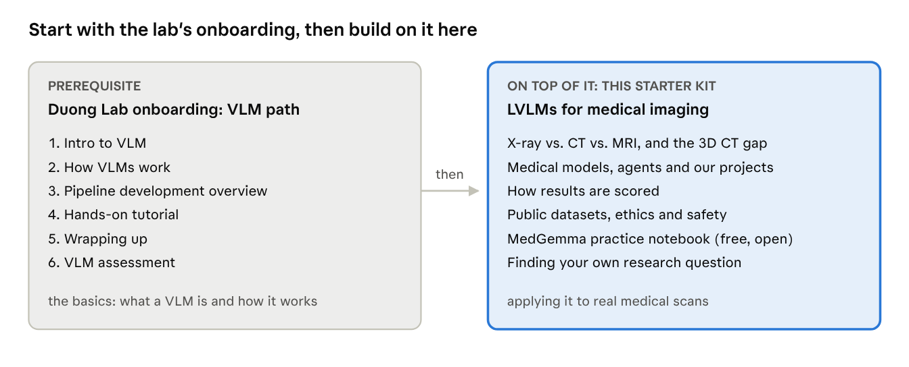
Prerequisite: Duong Lab onboarding: VLM path
What we'll cover
- Three kinds of medical AI models
- X-ray, CT and MRI: three levels of difficulty
- How to approach a project: try first, train later
- How results are scored
- Available models and agents
- My two projects
- Public datasets, ethics, and finding a research question
Three kinds of medical AI models
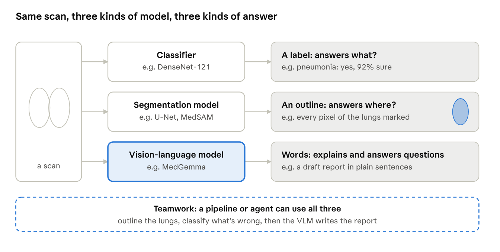
VLM vs. LVLM
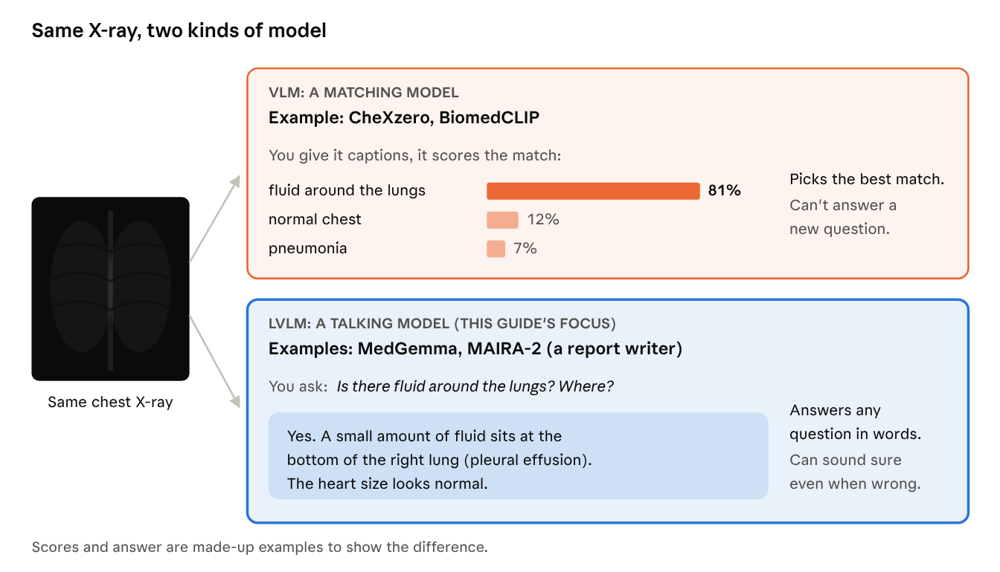
Quick check
You want the computer to outline exactly where the lungs are. Which kind of model fits best?
Our projects fall into three categories
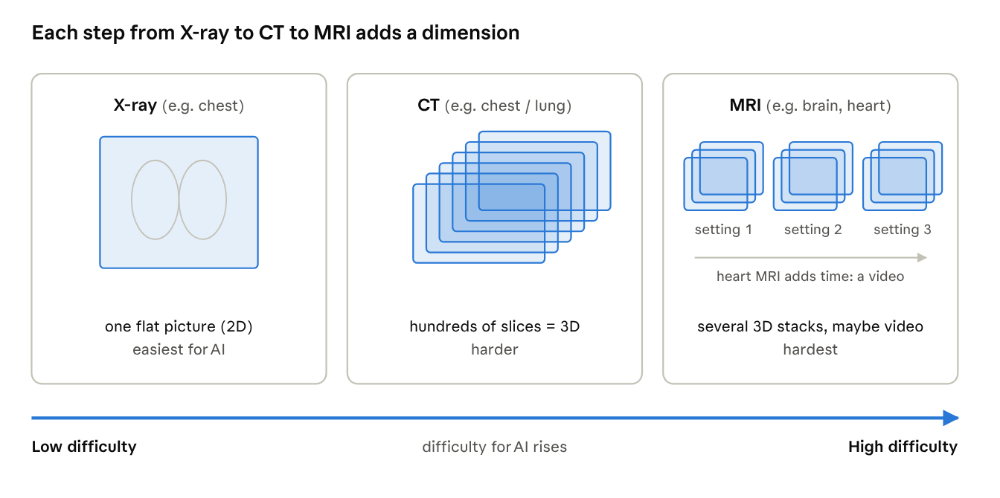
The 3D CT gap
- Most popular VLMs were built for flat pictures: they only flip through a sample of a CT's slices
- The few true 3D models still struggle with exact positions and sizes
- Most of them cover chest CT, because that's where the main public dataset is
- Specific tasks, like measuring airways, are thinner still: room for new research
Try first, train later
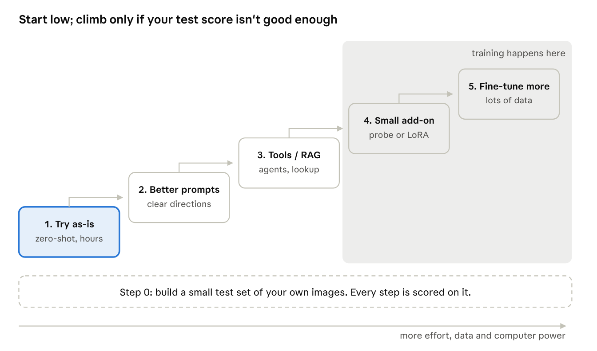
My path: start easy, go deep, then broaden
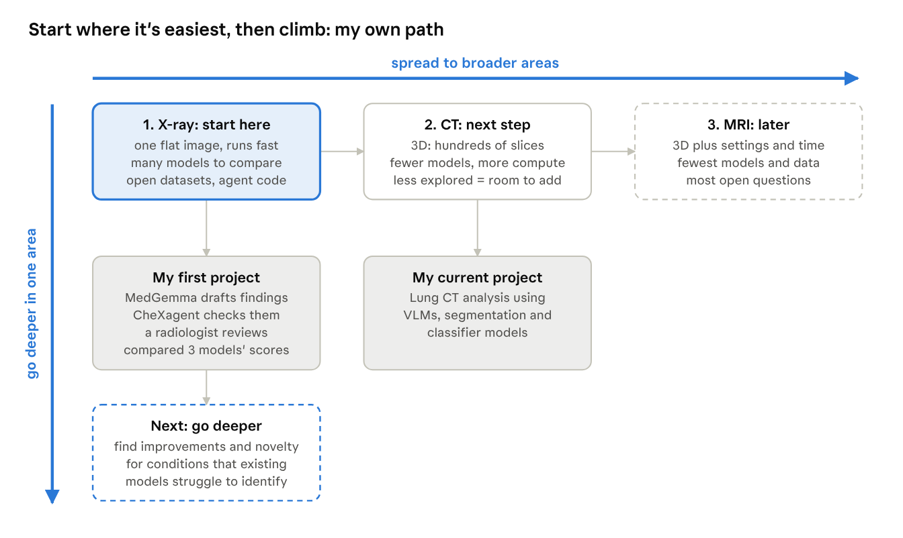
Your first project
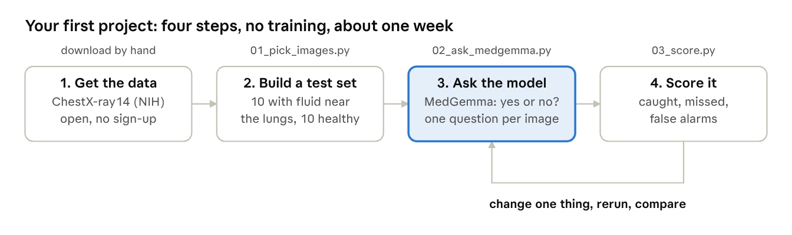
Live demo: open the MedGemma practice notebook
Better prompts: same model, different wording
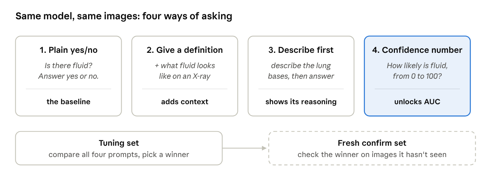
Two real prompt traps from our projects
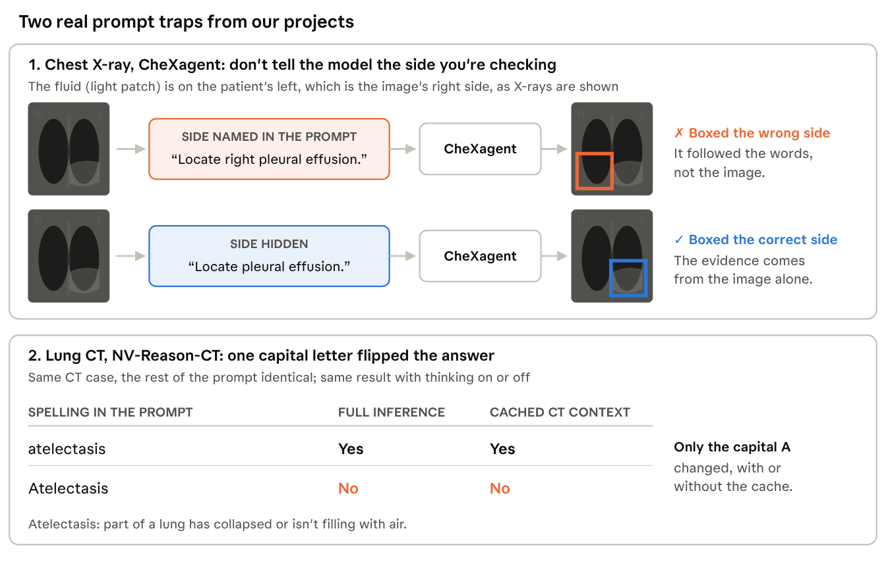
How results are scored
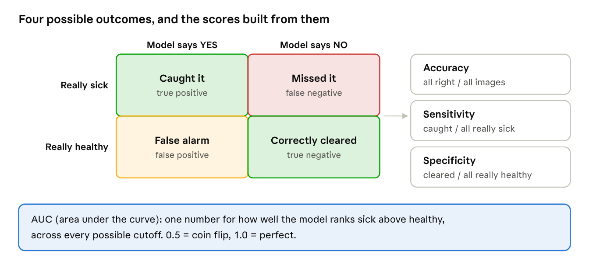
Try it: move the cutoff
Each dot is one X-ray, placed by the model's confidence score (0 to 100). Images at or above the cutoff count as "yes". Made-up example scores.
Cutoff: 50
-Sensitivity: real cases caught
-Specificity: healthy cleared
-Accuracy
| Model says yes | Model says no |
|---|
| Really sick | - | - |
|---|
| Really healthy | - | - |
|---|
Quick check
Only 5 in 100 X-rays show disease. A model says "healthy" every single time and scores 95% accuracy. Is it a good model?
Available models
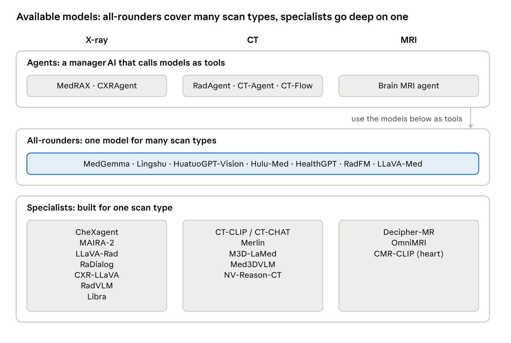
Agents: an AI that manages a team
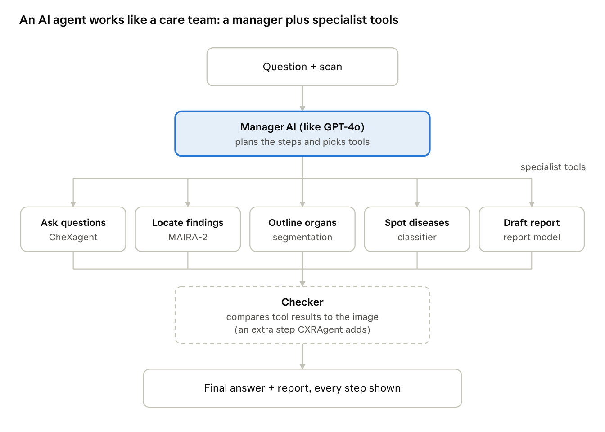
My chest X-ray project
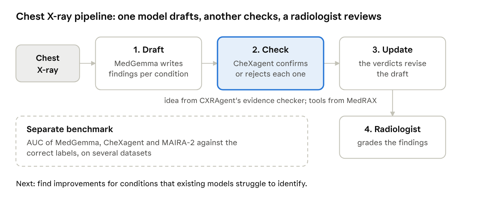
My lung CT project
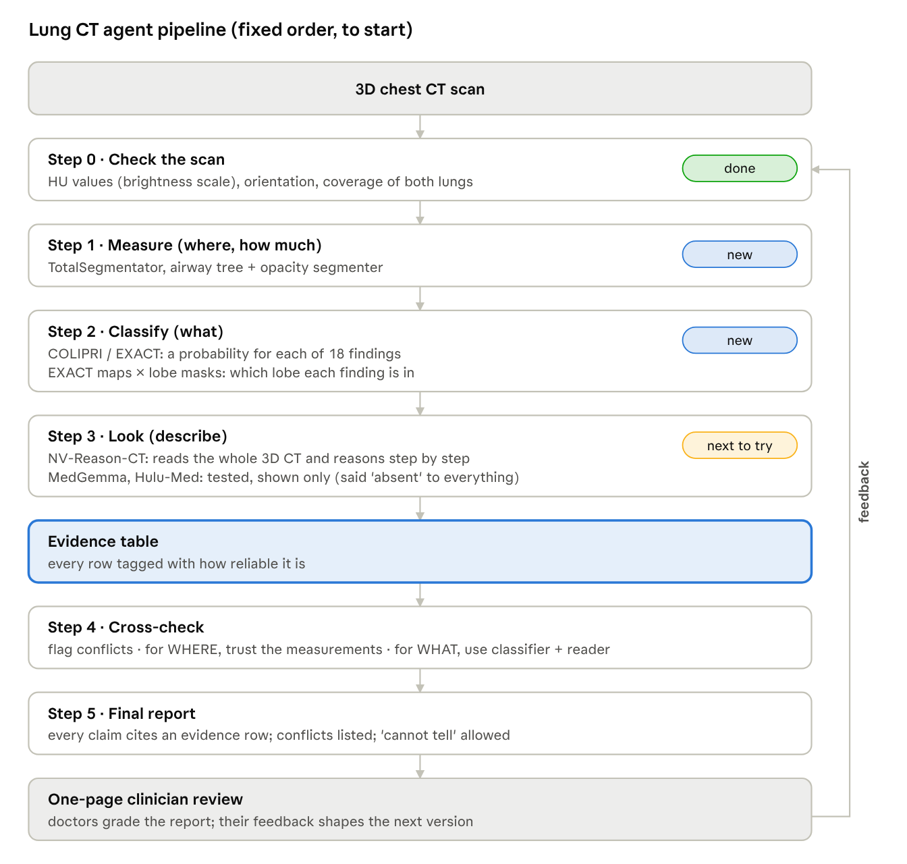
Public datasets: how big?
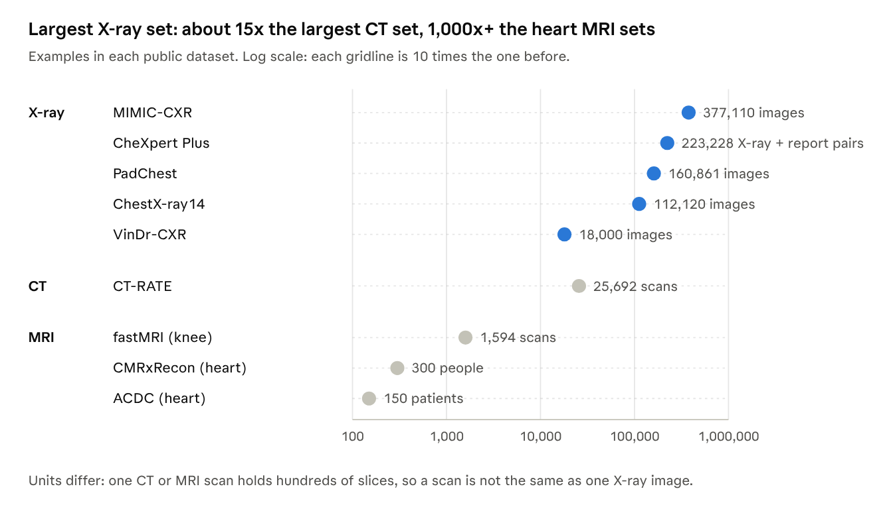
Public datasets: how hard to get?
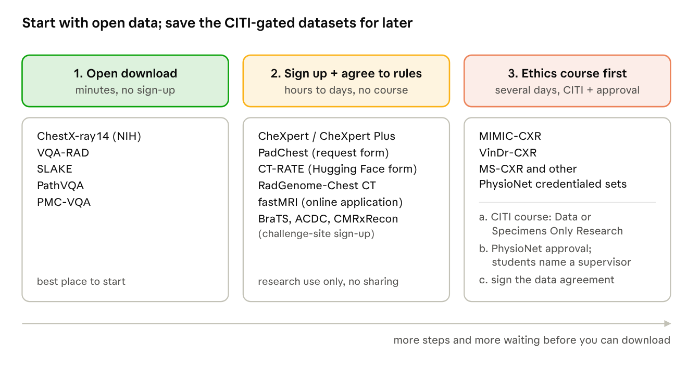
Quick check
You want to start tonight, with no sign-up. Which dataset can you download right away?
Ethics and safety
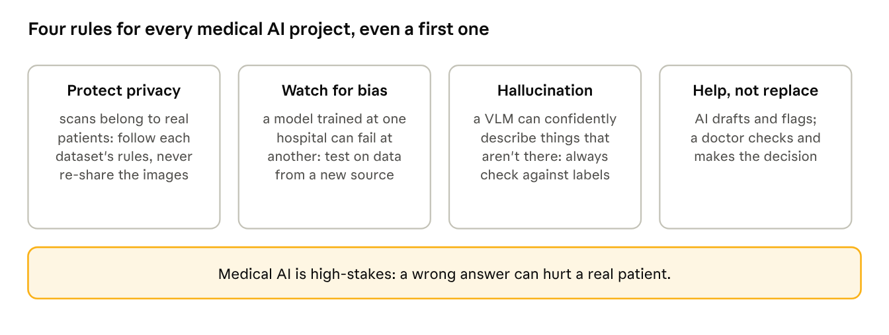
How to find a research question
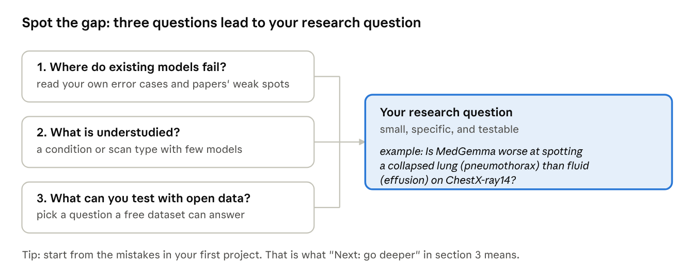
Later: training your own model
Steps 4 and 5 of the ladder. Details in the guide, section 11.
Let's discuss
- If an AI and a doctor disagree about a scan, who should decide, and why?
- Why might a general AI sometimes beat a medical-specialist AI?
- What could go wrong if an AI is trained mostly on scans from one hospital?
Get started this week
github.com/vaniinfo/lvlm-starter-kit
- Read the guide: docs/guide.md
- Run the MedGemma practice notebook in Colab
- Write down where the model was wrong. That's your first research question.
Open the notebook